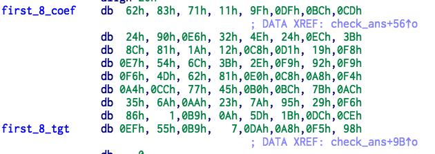

Easy Reverse 150 points
题意
Input the correct password & submit it
Attachment: easy_re.zip
解题步骤
通过对代码逆向，可以知道，代码对前八个字符和后八个字符分别乘上一个矩阵，然后和一个向量进行对比，实际上就是求解一个同余方程组。下面是矩阵和向量。


编写 reverse.sage 进行求解：
R = IntegerModRing(128)
A = matrix(R,[[0x62,0x83,0x71,0x11,0x9F,0xDF,0xBC,0xCD],[0x24,0x90,0xE6,0x32,0x4E,0x24,0xEC,0x3B],
[0x8C,0x81,0x1A,0x12,0xC8,0xD1,0x19,0xF8],[0xE7,0x54,0x6C,0x3B,0x2E,0xF9,0x92,0xF9],
[0xF6,0x4D,0x62,0x81,0xE0,0xC8,0xA8,0xF4],[0xA4,0xCC,0x77,0x45,0xB0,0xBC,0x7B,0xAC],
[0x35,0x6A,0xAA,0x23,0x7A,0x95,0x29,0xF6],[0x86,0x01,0xB9,0x0A,0x5D,0x1B,0xDC,0xCE]])
b = matrix(R,[[0xEF,0x55,0xB9,0x07,0xDA,0xA8,0xF5,0x98]]).transpose()
ans = A.solve_right(b)
print '1'
print ans
A = matrix(R,[[0x34,0x6E,0x80,0x51,0xCE,0x7D,0xFA,0xDB],[0x61,0x48,0xDE,0xDE,0xB7,0xBE,0xE9,0x60],
[0x37,0xB5,0xC3,0x0E,0x97,0xAB,0x07,0xF1],[0x84,0x34,0x3D,0xC7,0x9F,0xB8,0x66,0xE9],
[0x3F,0xF8,0xC8,0x8D,0xB1,0x5E,0x12,0x67],[0xEB,0x47,0x26,0xBF,0x60,0x27,0xE3,0x32],
[0xD8,0xC4,0x59,0xDD,0xB1,0xE0,0x0E,0xBE],[0x1F,0x32,0xA4,0xC6,0x33,0xAB,0xF9,0x4D]])
b = matrix(R,[[0x19,0x38,0xA8,0x89,0x38,0xFF,0xD8,0x9D]]).transpose()
ans = A.solve_right(b)
print '2'
print ans得到结果： THUCTF{$hEl10_w@R1d_rE!}